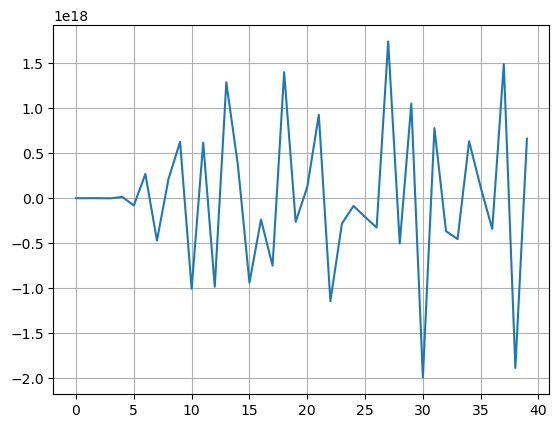

Линейные системы уравнений являются базовым инструментом в численной линейной алгебре.
Они встречаются в:
Задачах линейной регрессии
Дискретизации дифференциальных/интегральных уравнений в частных производных
Линеаризации задач нелинейной регрессии
Оптимизации (например, методы Гаусса-Ньютона и Ньютона-Рафсона, условия Каруша-Куна-Такера)
Линейные уравнения и матрицы
Из школы мы знаем о линейных уравнениях.
Система линейных уравнений может быть записана в форме
\begin{align*}
&2 x + 3 y = 5\quad &\longrightarrow \quad &2x + 3 y + 0 z = 5\\
&2 x + 3z = 5\quad &\longrightarrow\quad &2 x + 0 y + 3 z = 5\\
&x + y = 2\quad &\longrightarrow\quad & 1 x + 1 y + 0 z = 2\\
\end{align*}
где A - матрица размера 3 \times 3, а f - правая часть
Переопределенные и недоопределенные системы линейных уравнений
Если система Au = f имеет:
больше уравнений, чем неизвестных, она называется переопределенной системой (как правило, не имеет решения)
меньше уравнений, чем неизвестных, она называется недоопределенной системой (решение не единственно, для получения единственного решения необходимы дополнительные предположения)
Существование решений
Решение системы линейных уравнений с квадратной матрицей A
A u = f
существует тогда и только тогда, когда * \det A \ne 0
или
матрица A имеет полный ранг.
Масштабы линейных систем
В разных приложениях типичный размер линейных систем может быть разным.
Малые: n \leq 10^4 (полная матрица может храниться в памяти, плотная матрица)
Средние: n = 10^4 - 10^6 (обычно разреженная или структурированная матрица)
Затем мы исключаем x_2 и так далее из второго уравнения.
Важно, что ведущие элементы (на которые мы делим) не равны 0.
Обратный проход
На обратном проходе: - решаем уравнение для x_n - подставляем его в уравнение для x_{n-1} и так далее, пока не вычислим все x_i, i=1,\ldots, n.
Метод Гаусса и LU-разложение
Метод Гаусса - это вычисление одного из важнейших матричных разложений: LU-разложения.
Определение: LU-разложением квадратной матрицы A называется представление
A = LU,
где - L - нижнетреугольная матрица (элементы строго над диагональю равны нулю) - U - верхнетреугольная матрица (элементы строго под диагональю равны нулю)
Это разложение не единственно, поэтому обычно требуют, чтобы матрица L имела единицы на диагонали.
Основная цель LU-разложения - это решение линейной системы, потому что
A^{-1} f = (L U)^{-1} f = U^{-1} L^{-1} f,
и это сводится к решению двух линейных систем прямой проход
L y = f,
и обратный проход
U x = y.
Существует ли LU-разложение всегда?
Сложность метода Гаусса/LU-разложения
Каждый шаг исключения требует \mathcal{O}(n^2) операций.
Таким образом, стоимость наивного алгоритма составляет \mathcal{O}(n^3).
Подумайте: может ли алгоритм Штрассена помочь здесь?
Блочное LU-разложение
Мы можем попробовать вычислить блочную версию LU-разложения:
Есть две основные операции: вычисление LU-разложения половинных матриц + произведение матриц.
Существование LU-разложения
Алгоритм LU-разложения не даст сбой, если мы не делим на ноль на каждом шаге метода Гаусса.
Вопрос: когда это так, для какого класса матриц?
Ответ: это верно для строго регулярных матриц.
Строго регулярные матрицы и LU-разложение
Определение. Матрица A называется строго регулярной, если все её ведущие главные миноры (т.е. подматрицы, состоящие из первых k строк и k столбцов) невырождены.
В этом случае всегда существует LU-разложение. Обратное также верно (проверьте!).
Следствие: Если L - унитреугольная матрица (единицы на диагонали), то LU-разложение единственно.
Доказательство: Действительно, L_1 U_1 = L_2 U_2 означает L_2^{-1} L_1 = U_2 U_1^{-1}. L_2^{-1} L_1 - нижнетреугольная матрица с единицами на диагонали. U_2 U_1^{-1} - верхнетреугольная матрица. Следовательно, L_2^{-1} L_1 = U_2 U_1^{-1} = I и L_1 = L_2, U_1 = U_2.
LU-разложение для эрмитовых положительно определенных матриц (разложение Холецкого)
Строго регулярные матрицы имеют LU-разложение.
Важным подклассом строго регулярных матриц является класс эрмитовых положительно определенных матриц
Определение. Матрица A называется положительно определенной , если для любого x: \Vert x \Vert \ne 0 выполняется
(x, Ax) > 0.
- если это выполняется для x \in \mathbb{C}^n, то матрица A должна быть эрмитовой - если это выполняется для x \in \mathbb{R}^n, то матрица A может быть несимметричной
Утверждение: Эрмитова положительно определенная матрица A является строго регулярной и имеет разложение Холецкого вида
A = RR^*,
где R - нижнетреугольная матрица.
Давайте попробуем доказать этот факт (на доске).
Иногда это называют “квадратным корнем” из матрицы.
Вычисление LU-разложения
Во многих случаях вычисление LU-разложения один раз - хорошая идея!
После того, как разложение найдено (это требует \mathcal{O}(n^3) операций), решение линейных систем с L и U требует только \mathcal{O}(n^2) операций.
Проверьте:
Решение линейных систем с треугольными матрицами простое (почему?).
Как мы вычисляем множители L и U?
Когда LU-разложение не работает
Что происходит, если матрица не является строго регулярной (или ведущие элементы в методе Гаусса очень малы?).
Существует классический пример матрицы 2 \times 2 с плохим LU-разложением.
Мы можем выполнять выбор ведущего элемента, т.е. переставлять строки и столбцы для максимизации A_{kk}, на который мы делим.
Простейшая, но эффективная стратегия - это выбор ведущей строки: на каждом шаге выбираем индекс с максимальным по модулю значением и ставим его на диагональ.
Это дает нам разложение
A = P L U,
где P - это матрица перестановок.
Вопрос: Что делает выбор ведущей строки хорошим?
Ответ: Он хорош тем, что
| L_{ij}|<1,
но элементы U могут вырасти до 2^n! (на практике это встречается очень редко).
Можете ли вы придумать матрицу, где элементы U растут максимально возможным образом?
Устойчивость линейных систем
Существует фундаментальная проблема решения линейных систем, которая не зависит от используемого алгоритма.
Она возникает, когда элементы матрицы представлены в виде чисел с плавающей точкой или присутствует измерительный шум.
Проиллюстрируем эту проблему на следующем примере.
import numpy as npimport matplotlib.pyplot as plt%matplotlib inlinen =40a = [[1.0/(i + j +0.5) for i inrange(n)] for j inrange(n)]a = np.array(a)rhs = np.random.normal(size=(n,)) #Right-hand sidex = np.linalg.solve(a, rhs) #This function computes LU-factorization and solves linear system#And check if everything is fineer = np.linalg.norm(np.dot(a, x) - rhs) / np.linalg.norm(rhs)print(er)plt.plot(x)plt.grid(True)
19.87968164147078

Как видите, ошибка растет с увеличением n, и нам нужно выяснить почему.
Важный момент заключается в том, что это не проблема алгоритма: это проблема представления матрицы в памяти.
Ошибка возникает в момент, когда элементы матрицы вычисляются приближенно.
Вопросы по демонстрации
В чем была проблема в предыдущем примере?
Почему ошибка растет так быстро?
И здесь мы подходим к одному из основных понятий численной линейной алгебры: понятию числа обусловленности матрицы.
Но прежде чем говорить об этом, нам нужно определить обратную матрицу.
Обратная матрица: определение
Обратная матрица к матрице A определяется как матрица X, обозначаемая A^{-1}, такая что
AX = XA = I,
где I - единичная матрица (т.е. I_{ij} = 0 при i \ne j и 1 в противном случае). - Вычисление обратной матрицы связано с решением линейных систем. Действительно, i-й столбец произведения дает
A x_i = e_i,
где e_i - это i-й столбец единичной матрицы. - Таким образом, мы можем применить метод Гаусса для решения этой системы. Более того, если в этом процессе нет деления на ноль (и опорные элементы не зависят от правой части), то систему можно решить.
Обратная матрица и линейные системы
Если мы вычислили A^{-1}, то решение линейной системы
Ax = f
просто x = A^{-1} f.
Действительно,
A(A^{-1} f) = (AA^{-1})f = I f = f.
Ряд Неймана
Чтобы изучить, почему могут возникать такие большие ошибки в решении (см. пример выше с матрицей Гильберта), нам нужен важный вспомогательный результат.
Ряд Неймана:
Если для матрицы F выполняется условие \Vert F \Vert < 1, то матрица (I - F) обратима и
(I - F)^{-1} = I + F + F^2 + F^3 + \ldots = \sum_{k=0}^{\infty} F^k.
Заметим, что это матричная версия геометрической прогрессии.
Вопрос: какая норма здесь рассматривается? Какая норма является “наилучшей” в данном случае?
Доказательство
Доказательство конструктивно. Сначала докажем, что ряд \sum_{k=0}^{\infty} F^k сходится.
Как и в скалярном случае, имеем
(I - F) \sum_{k=0}^N F^k = (I - F^{N+1}) \rightarrow I, \quad N \to +\infty
Таким образом, нахождение оптимального x эквивалентно решению
Rx = Q^* b.
Поскольку R верхнетреугольная, решение этой линейной системы требует \mathcal{O}(n^2) операций.
Также это более устойчиво, чем использование псевдообратной матрицы напрямую.
Расширение системы до большей размерности
Вместо решения A^* A x = A^* b, введем новую переменную r = Ax - b и получим
A^* r = 0, \quad r = Ax - b,
или в блочной форме
\begin{pmatrix} 0 & A^* \\ A & -I \end{pmatrix} \begin{pmatrix} x \\ r \end{pmatrix} = \begin{pmatrix} 0 \\ b \end{pmatrix},
общий размер системы равен (n + m), а число обусловленности совпадает с числом обусловленности для A - Как определить число обусловленности для прямоугольной матрицы?
Пример МНК
Рассмотрим двумерный пример. Предположим, что у нас есть линейная модель
y = ax + b
и зашумленные данные (x_1, y_1), \dots (x_n, y_n). Тогда линейная система для коэффициентов будет выглядеть следующим образом
\begin{split}
a x_1 &+ b &= y_1 \\
&\vdots \\
a x_n &+ b &= y_n \\
\end{split}